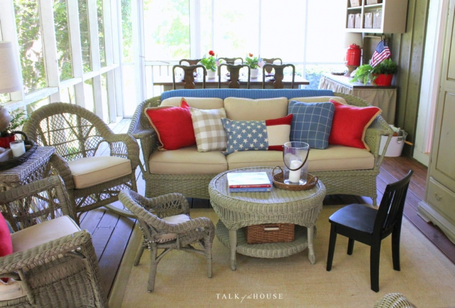
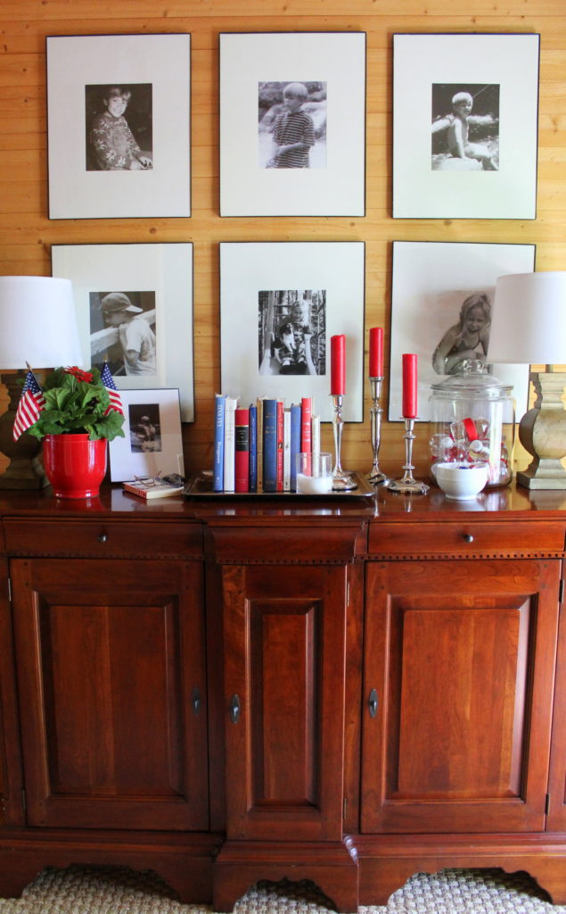
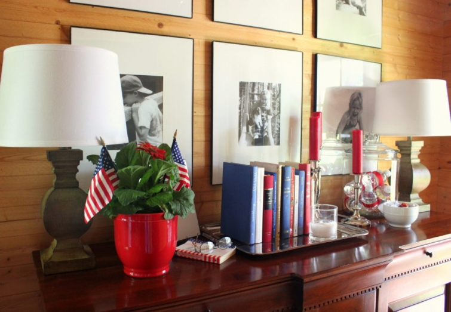

.png)
.PNG)
.PNG)
.PNG)
.PNG)
.PNG)
.JPG)
.JPG)
.PNG)
.PNG)



I know I owe you the rest of the garden tour from a few weeks ago, but with all the red, white, and blue in the house, I really wanted you to see the summer decorating before the 4th of July. (If you have been following on Instagram, you have had a sneak peek at much of this decor. 🙂 )

Fingers crossed you won’t be too upset with me for delaying the garden tour a little longer. 🙂

So let’s catch up a bit while we look around. It has rained and rained a lot the past few weeks, but we have kept on working… scraping, caulking, replacing boards, priming, and painting things outside when the weather has cooperated. It has been a frustratingly sloooow process.

Just yesterday, I thought I was going to knock out painting the wall outside our sons’ bedroom. Well, my husband started checking out one of the boards below the window…found it was rotten…and the plywood behind it…

which resulted in pulling off the window trim and the cedar shake shingles…which resulted in a trip to Lowes for more plywood…replacing it…and…you get the picture. It seems it is never just simply paint the wall.

When this is all finished, I think the exterior of our house is going to be in better shape than it was when it was built 21 years ago!

On the flip side, we have enjoyed some family visits. My husband flew to New Haven, Connecticut to help our middle son (the one in law school) move his things from his old apartment to a different one for next year and then rode home with him from there. Our son was able to spend a week here with us before driving to Colorado for his summer internship.

And then a week or so after that, our Seattle son flew home for a visit. We were thrilled to have him here as well! So part of our summer has been busy with playing board games, watching movies, and eating at favorite local restaurants as we entertained “our boys.” 🙂

But between the family visits and the exterior painting, I have managed to fit in a little redecorating for the season. Obviously I pulled out all the blue books and throw pillows to mix with the red here, and a large dose of flags was also added.

(When your house is already full of red items, decorating for the 4th of July isn’t too hard! 🙂 )

Of course the back porch didn’t get left out of the summer decorating activity. 🙂

I’ve tried to simplify a bit, so the chalkboard over the buffet table has been replaced by a large basket (from Pottery Barn Outlet.)

Lettering all the chalkboards around here has been time consuming, so the basket is a big wall object that requires less work for me.

Homemade ice cream will be on our 4th of July menu.
So the ice cream bowls fit in perfectly.

And my favorite red plates are making an appearance on the porch table with old Sur la Table blue gingham kitchen towels used as napkins.


The glasses are Tag bubble goblets that I picked up in Serenbe. They are available on Amazon if you are interested in them.

And that brings us to the end of part 1 of our little tour. And yes, there is a part 2 coming at you for the 4th. 🙂 So I hope you will find time to fit in another visit here then!
Gabbie and I will be right here waiting for you. 🙂

Until next time…


.PNG)
I adore your back porch! Sheer relaxation! Summer is supposed to be relaxing, but it never quite turns out that way! LOL. Thanks for sharing. Happy Weekend. Toodles, Kathryn @TheDedicatedHouse
Your home looks beautiful as always. Love your blog (my fav).
I miss your posts but understand why, you have been busy! Love your home!!
I too was glad to see a post from you! We have been doing some work on our home, so I understand how things go…paint the wall, replace a board, and so on! Gabbie is still a pretty girl although she has grown up a bit. Looking forward to part 2.
Your home is always so beautiful and are truly blessed. Also Gabbie was dressed for the occasion with her matching red tag.
Hi Kelly, great to hear from you. I’m happily following along on instagram (loveswitzerlandsnow) but it’s even better to see a post from you! Not sure why but I don’t seem to be receiving your emails lately so I’m a little late commenting. Your house looks beautiful as always. Something so uplifting about the red white and blue! Glad you’ve been having some family time alongside working so hard on your house. It’s so frustrating, isn’t it when starting one job seems to highlight one or two more! It’s never straightforward! Hopefully before too long you’ll be able to step back and appreciate that the external aspect of your house is as beautiful as the indoors! 🙂 Take care Kelly … hope you enjoyed your 4th July Celebrations.
Rosemary
So happy to see this decorating/entertaining post! Your creativity brings enjoyment and inspiration to so many people. Thank you so much for sharing your ideas and journey! Hope your holiday celebration was wonderful!
What a lovely surprise to find your post!
Family is like medicine. Glad for your visits.
Gabbie has grown.
Looking forward to the next post.
Happy 4th.
So pretty!
What a lovely surprise to open my email and see my favorite porch from blogland! So very happy you have had some special family time making memories. Can so relate to the frustrations of maintenance on an older home. One last take thing leads to a few HUGE things. We often look at each other and say, ” We are told for this.”. Thank you for the post. Happy Independence Day!
So good to hear from you…it was a nice surprise to get your email post. Things are looking great at your place….hopefully the outside repair and painting will be done soon. Love all the red of course…great signature color. Enjoy the holiday! 😉
I can only echo the above comments. I have really missed your posts. You are such an inspiration.
Would you consider posting former blogs. It would save you time and some of us don’t want to scroll back thru but would love to receive them as a surprise in our inboxes.
Kelly,
I’ve sure missed your posts. It’s always fun and provides me with such inspiration. It sounds like you’ve been busy. Your home looks wonderful.
xo,
Karen
Missed you….enjoyed your post and all the red, white and blue. Get your work done and come back to us!
Take care and God Bless, Jeanne
Aww– thank you for a nice long post!! What a treat– even though I do follow you on IG ( for some reason, I no longer can post on there?) I do really miss you and think and pray for you often. Your blog has been such a touchstone for me for several years now. But I am truly glad you have taken off a much needed break due to how much time/work involved. Hope you are feeling a retrieve from that pressure, but you know when something is no longer a joy and more of a chore it is time to make a change. You will know what to do in the future when you are finished with the outside of your home. Hope to see you continue your pictures on Instagram no matter what happens. Looks like you have a large following on IG as well as TOTH. Love ❤️ Prayers 🙏 and Blessings to you and yours! 💕🇺🇸💕
So happy to see “Talk of the House” in my inbox this morning!! And I love all of your red, white and blue. Happy 4th!
What a nice surprise to see your post this morning. I have missed seeing your name their on my e-mails this summer. Can’t wait to see the finished house project. SO glad that you take the time with your sons when they are around to make lasting memories.
Guess while it was raining you had to do some decorating! 😉 Sorry you have been frustrated by rains. I know how that is when you want to do outside work and all it does is rain! But the decor is lovely, as always! I feel guilty for not having one single flag displayed this year, but I never got around to getting new ones yet. Hopefully I will have them by Labor Day! We’ve been blessed with mostly good weather since May 1st, so have been busy building a dock/deck at the lakes’ edge, along with a gravel area to launch our kayaks from. When the weather hasn’t been good, we are working on the finishing of the basement – so far, we have a working bathroom, framed walls, and a barn door to the unfinished area hung. Our new pup helps (as in eats the tiniest thing she finds on the floor!) and she is growing, to 20 lbs. so far. Your pup has grown! I’ve seen her on instagram! Have a great holiday, and I look forward to another post!
Hey Kelly! You’ve inspired me again~thank you. I’ve missed you! Your friend, Julia
Your post put a big wide grin on my face. Missing your blog, but I know we will be thrilled to visit your home when all your renovation projects have been completed. You have inspired me with a love of red geraniums. I planted many both in our front and back yards. Our house is blue with white shutters, our flag flys almost every day, minus rainy days. Happy Independence Day, Kelly.
How beautiful your home looks! Love all the red, white, blue right down to Gabbie’s tag!! You thought of everything!
Thanks for coming back!!
It is so nice to see that sweet Gabbie face again. We have missed you, but it definitely sounds like you have accomplished a lot with the house. The inside is perfect just like a picture. Though I love to see your chalkboard lettering and am intrigued by what you choose to put on them, I think the new basket is quite lovely. Have a wonderful Independence Day celebration. I hope it is as grand as your inviting porch! (Love those cute bowls!)
I’m so glad you’re back! I’ve missed you! Hope you’re getting everything on your summer to do list checked off.
Always love your red….white, and blue! 🙂 I’m glad that y’all have gotten visits with your sons. Simplifying(the basket)when times are busy with other things is wise. Thanks for taking the time to do a post. I was selfishly happy that you got on Instagram before going on your semi-sabbatical from the blog.
So good to hear from you again! Gabbie is huge! Growing like a weed. My house has red white and blue most of the year because I love it so much. As always, I love your celebrating heart and home!
Absolutely gorgeous. I love all the red white and blue. Your home is always stunning.
I loved seeing all of your red, white & blue decor, especially the tablescape! Sounds like you guys are still really busy with all of the house projects….hang in there! Glad you had a few minutes to share your summer decorating – I always enjoy seeing it! Happy 4th!
You have been missed but this post is a happy surprise for me. Everything looks so nice, as usual.
Always like to see and hear what you have been up to – busy,busy,busy you are.
Happy and safe wishes for you and your family on the 4th!
I love your style of decorating and do look forward to when you share your talents!
Happy to hear from you, Kelly. Great to hear the boys were able to spend some of their summer with you. Hope the rest of your house projects go as planned.
Missed you. Wonderful to see your post this morning.
Very festive! Thanks for sharing + happy 4th of July!
What a treat. Thanks for the great post. Happy July 4th!
Good to hear from you again. I know you have been busy but we have missed you!!
Lovely as always. I know you enjoyed having the boys home.
As for June, my hubby was saying it was the wettest June ever here. I already knew that:) I don’t think it missed a day along the Gulf Coast. Hard rain too. I have lots of work to do outside as well..just in time for steamy July and August.
Abby is adorable too.
I love to see your updates. Super cute decorations for the 4th!
Good luck with the house painting…I hope that it is smoother sailing going forward!
What a pleasant surprise to have an email saying you had a post! Thank you! Your home looks all pretty and festive for July 4th! I am excited for more posts! (I feel like just today I can take a deep breath from the our son’s wedding. Then a post from you…Life might get back to normal!)
So happy to see your post! Your home is just lovely–all ready for the Fourth of July! I’m looking forward to hearing from you again soon.
WOW, what a great 4th of July surprise! Thank you for fitting in these treats for us between all of the house projects you have going on and the visiting family. The action never stops there, does it?! Your house and table look great, as always. And Gabbie is cuter than ever… I love that “self-conscious about being photographed” look she gets. 🙂 A nice wrap-up to my weekend. (I know… it’s ending way too late at night!)